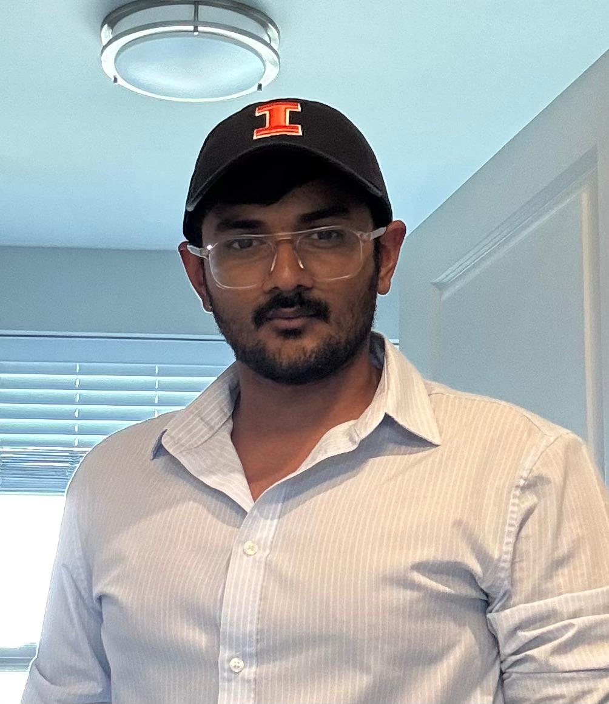

apr11@illinois.edu
GitHubMaster's student in Computer Science at the University of Illinois at Urbana-Champaign. I work on distributed systems, cloud infrastructure, and AI platform tooling.
I recently interned at StitchStudio building AI pipelines and background services, and before that I was a software engineer at Cognizant on Verizon's microservices platform. I have also done backend internship work on APIs and databases, and I graduated from SRM Institute of Science and Technology in 2023.